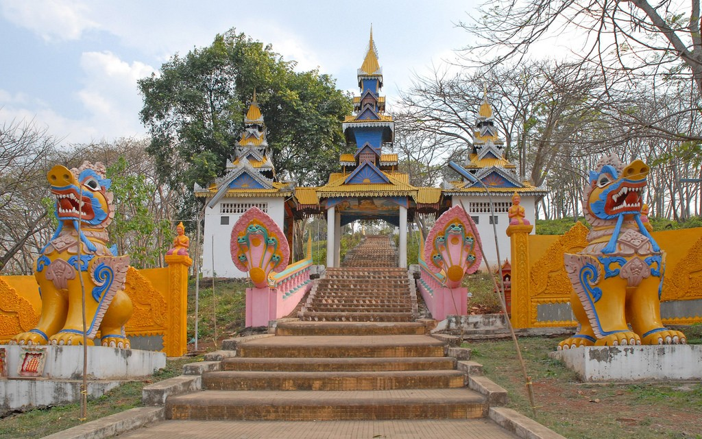

Pailin is a province on the northern edge of the Cardamom Mountains in western Cambodia, 25km from the border of Thailand. This province is surrounded by Battambang province, and was officially carved out of Battambang to become a separate administrative division after the surrender of the Khmer Rouge in 1996. A handful of natural attractions are await in Pailin, including scenic mountains, waterfalls, and a lush bamboo forest. Its capital is Pailin City.
Another interesting sites for tourists is Wat Rattanak Sorphon, a Burmese style pagoda that is more than 570 years old. With beautiful Burmese characters are inscribed on the gates, this pagoda is evidence of early Burmese settlement in this area. Indeed, the Burmese were the first people to discover the precious gems in the region, and Pailin subsequently became the largest mining center for sapphires and rubies in Indochina. Phnom Yat has a good number of places where visitors can still see the gem-mining activities today.